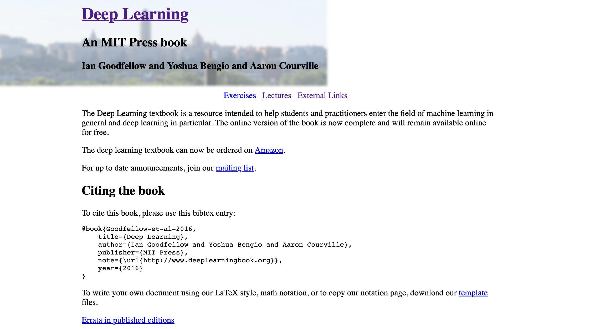
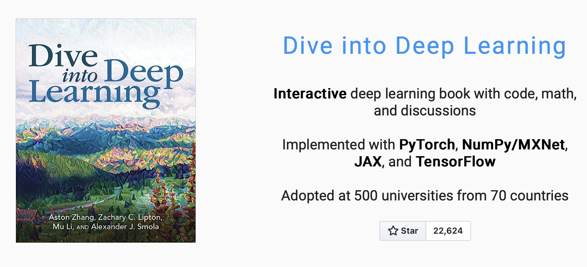
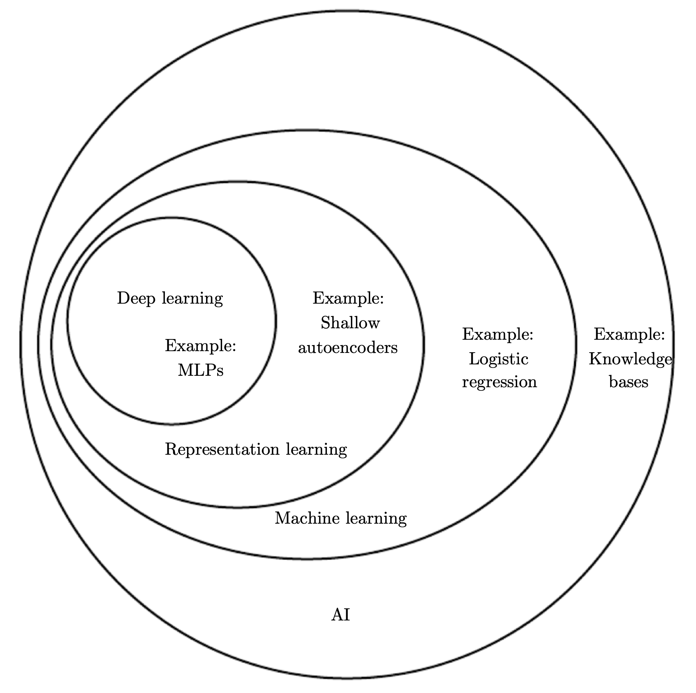
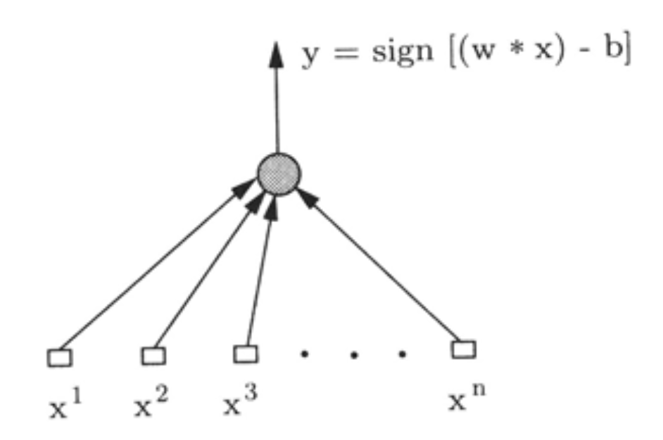
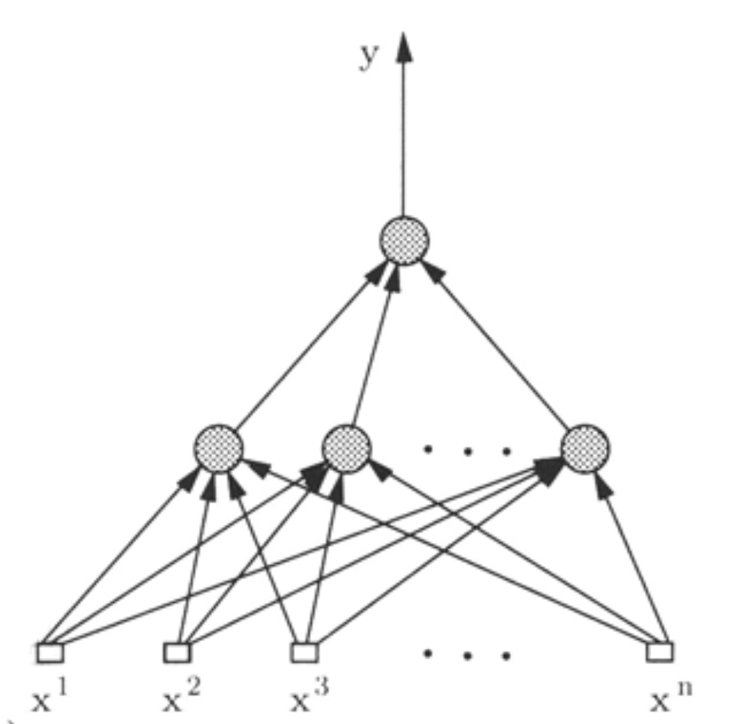
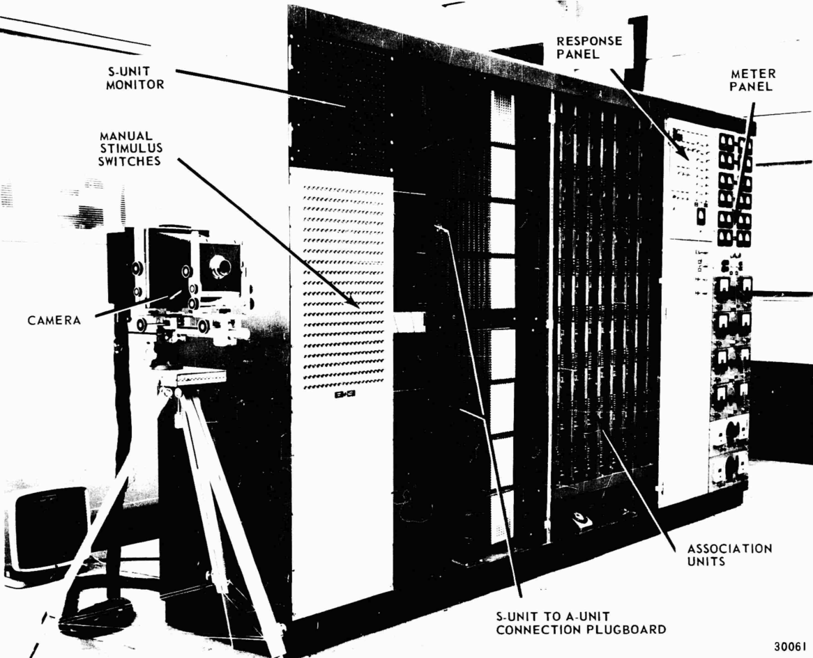
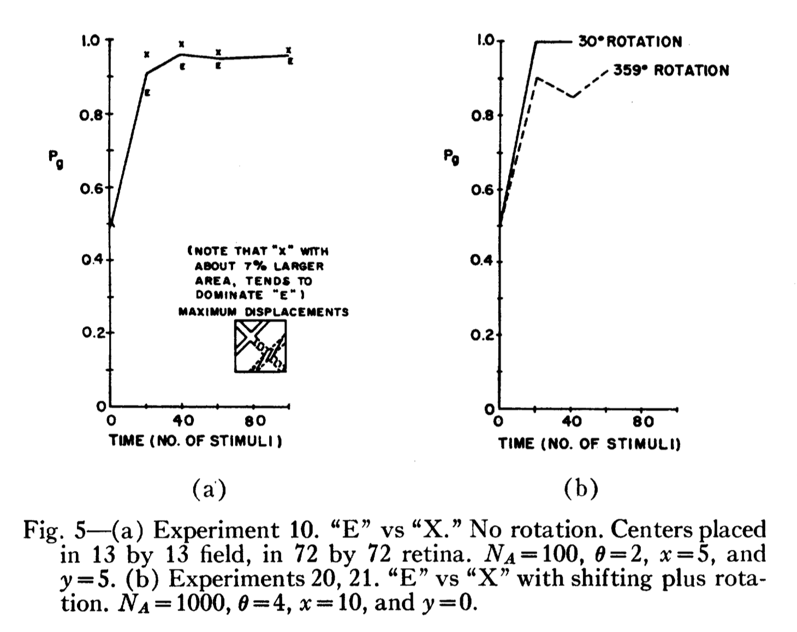
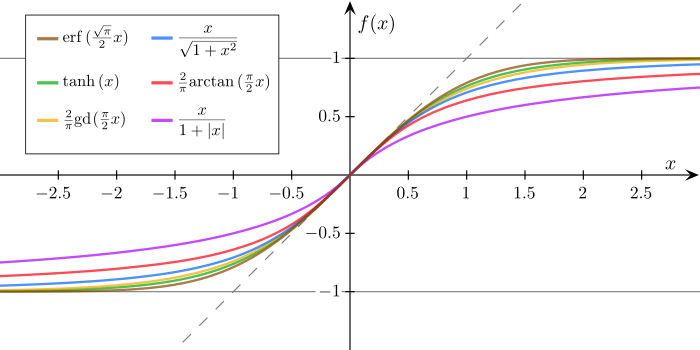
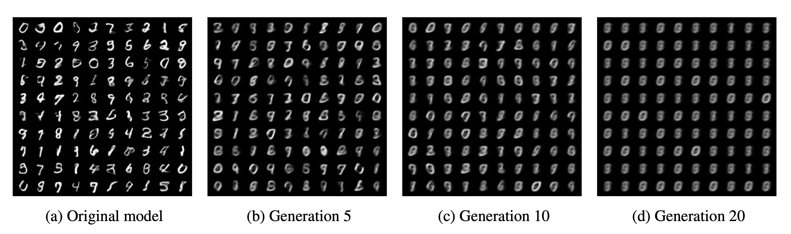

STAT 5011: Course Introduction
Syllabus
\[ \newcommand{\mc}[1]{\mathcal{#1}} \newcommand{\R}{\mathbb{R}} \newcommand{\E}{\mathbb{E}} \renewcommand{\P}{\mathbb{P}} \newcommand{\var}{{\rm Var}} % Variance \newcommand{\mse}{{\rm MSE}} % MSE \newcommand{\bias}{{\rm Bias}} % MSE \newcommand{\cov}{{\rm Cov}} % Covariance \newcommand{\iid}{\stackrel{\rm iid}{\sim}} \newcommand{\ind}{\stackrel{\rm ind}{\sim}} \renewcommand{\choose}[2]{\binom{#1}{#2}} % Choose \newcommand{\chooses}[2]{{}_{#1}C_{#2}} % Small choose \newcommand{\cd}{\stackrel{d}{\rightarrow}} \newcommand{\cas}{\stackrel{a.s.}{\rightarrow}} \newcommand{\cp}{\stackrel{p}{\rightarrow}} \newcommand{\bin}{{\rm Bin}} \newcommand{\ber}{{\rm Ber}} \DeclareMathOperator*{\argmax}{argmax} \DeclareMathOperator*{\argmin}{argmin} \]
Course Description
- This course provides an introduction to some commonly used models in deep learning:
- Multilayer Perceptron (MLP) or Fully-connected neural network (FCN)
- Convolutional Neural Network (CNN)
- Recurrent Neural Network (RNN)
- Generative models
- The course will cover the basic theory, practical implementation, and some applications of these models.
Prerequisites
- Knowledge of linear algebra, calculus, probability, and statistics is required.
- Experiences in Python programming is also required (import libraries, write functions, etc.)
- Knowledge of object-oriented programming is a plus.
- Knowledge of machine learning would also be helpful (we will cover some basics in the course).
References
Deep Learning: https://www.deeplearningbook.org

References
Dive into Deep Learning: https://d2l.ai

Other Resources
- T. Hastie, R. Tibshirani, and J. Friedman (2009). The Elements of Statistical Learning.
- C. M. Bishop (2006). Pattern Recognition and Machine Learning.
- S. Shalev-Shwartz and S. Ben-David (2014). Understanding Machine Learning: From Theory to Algorithms.
- MIT 9.520
- History of AI
- V. Vapnik (2000). The Nature of Statistical Learning Theory
Schedule
| Week | Date | Topics | Reading |
|---|---|---|---|
| 1 | 9/3 | Course Introduction | |
| 2 | 9/10 | Review of Linear Models | |
| 3 | 9/17 | No class (Mid-Autumn Festival) | |
| 4 | 9/24 | Machine Learning Basics | DL Ch. 5 |
| 5 | 10/1 | Multilayer Perceptron | D2L Ch. 5 & DL Ch. 6 |
| 6 | 10/8 | Regularization for Deep Learning | DL Ch. 6 |
| 7 | 10/15 | Optimization for DL Models | D2L Ch. 12 & DL Ch. 7 |
| 8 | 10/22 | Project Proposal | |
| 9 | 10/29 | Implementation of DL Models | D2L Ch. 6 |
| 10 | 11/5 | Convolutional Networks | D2L Ch. 7, 8 & DL Ch. 9 |
| 11 | 11/12 | Recurrent Networks | D2L Ch. 9, 10 & DL Ch. 10 |
| 12 | 11/19 | Hyperparameter Optimization and Tuning | D2L Ch. 19 & DL Ch. 11 |
| 13 | 11/26 | Generative Models: Autoencoders, GAN, Diffusion models | D2L Ch. 20 & DL Ch. 14 |
| 14 | 12/3 | Additional Topics: Attention Mechanisms and Gaussian Process | D2L Ch. 11, 18 |
| 15-16 | 12/10-17 | Final Project Presentation |
Grading
- Homework: 30%
- Project proposal: 20%
- A 20-minute presentation
- Final Project: 50%
- A 30-minute presentation (25%)
- A final report (25%)
- Office hours: Tue. 15:00-17:00
Homework
- There will be 3 homework assignments.
- Homework includes some math problems and programming exercises.
- Programming assignments will be done using IPython notebooks and exported to PDF.
- Math problems will be submitted as a PDF file (using LaTeX preferrably).
- DO NOT:
- Plagiarism: copy solution from others or from the internet.
- Take photos of your computer screen.
- Take photos of your handwritten solutions.
Project Proposal
- A group of 2-3 students
- Pick a topic that you plan to solve using deep learning models, for example:
- image classification/segmentation
- stock price prediction
- weather forcasting
- It could be something related to your thesis research.
- The proposal should include:
- Discription of your problem
- Example dataset
- Summary of 1-2 references
- Give a 20-minute presentation on 10/22
Final Project
- Oral Presentation (25%)
- 30-minute presentation
- Focus the model you used, the dataset, and the results
- Compare to other models
- Written Report (25%)
- Use the template: NeurIPS
- 6-page including references; one report per group
- Include: introduction, methods, results, and conclusion
- More details will be provided later.
What is Deep Learning?

What is DL/ML?
- Deep learning is a subfield of machine learning that is based on deep neural networks (DNN).
- DNN is a powerful approximating class of parametric class of functions.
- ML is a field of study that focuses on automatic detection/extraction of patterns from raw data.
- To achieve this, ML uses a variety of statistical models:
- linear regression, logistic regression,
- tree models,
- \(k\)-nearest neighbors (kNN), etc.
History of Learning Research
Turing Test
- The Turing test, originally called the imitation game by Alan Turing in 1950, is a test of a machine’s ability to exhibit intelligent behaviour equivalent to that of a human.
- The field of AI research was founded at a workshop at Dartmouth College in 1956.

Hebb’s Theory
- In 1949, Donald Hebb1 proposed a theory of learning in which the connection between two neurons is strengthened if they are activated simultaneously.
- Hebbian learning rule:
- The connection between two neurons: \(w_{ij} \leftarrow w_{ij} + \Delta w_{ij}\)
- The change in the connection: \(\Delta w_{ij} = \eta x_i x_j\)
- where \(\eta\) is the learning rate, \(x_i\) and \(x_j\) are the activities of the two neurons.
Biological Neuron Model

Artificial Neuron
- McCulloch and Pitts (1943) proposed a simple mathematical model for neurons.
- A neuron has \(n\) inputs \(x = (x_1, ... ,x_n) \in \R^n\) and one output \(y \in \{-1, 1\}\).
- \((u * v)\) is the inner product of two vectors, \(b\) is a threshold value, and \(\text{sign}(u)= 1\) if \(u > 0\) and \(\text{sign}(u)= -1\) if \(u\leq 0\).
- During the learning process, the model chooses appropriate coefficients \(w, b\) of the neuron.

Rosenblatt’s Perceptron (1960s)
- Rosenblatt considered a model that is a composition of several neurons.
- Each neuron has its own weight \(w\) and threshold \(b\).

Perceptron Learning Algorithm (PLA)
- The weights and bias between the input and the hidden layer are random numbers and kept fixed.
- Let \((x_1,y_1),\ldots,(x_n,y_n)\) be the training data and \(z_i\) be the transformation of the input \(x_i\) in the hidden layer.
- Initialize weights: \(w^{(0)} = 0\).
- If the next example of the training data \((z_{k+1}, y_{k+1})\) is classified correctly, i.e., \[ y_{k+1}(w^{(k)}\cdot z_{k+1}) > 0, \] then \(w^{(k + 1)} = w^{(k)}\).
- If the next element is classified incorrectly, i.e., \[ y_{k+1}(w^{(k)}\cdot z_{k+1}) \leq 0, \] then \(w^{(k +1)} = w^{(k)} +y_{k+1}z_{k+1}\).
Mark I Perceptron

Rosenblatt’s Experiment

Theoretical Analysis of PLA
In 1962, Novikoff1 proved the first theorem about the PLA. If
the norm of the training vectors \(z\) is bounded by some constant \(R\) (\(|z| \leq R\)),and
(linear separability) the training data can be separated with margin \(\rho\): \[ \sup_w \min_i y_i(z_i \cdot w) > \rho \]
Then after at most \(N \leq \frac{R^2}{\rho^2}\) steps, the hyperplane that separates the training data will be constructed.
Learning Theory
Novikoff’s result and Rosenblatt’s experiment raised several questions:
- What can be learned?
- What is the principle for designing learning algorithms?
- How can we assure that the algorithm is actually learning, not just memorizing?
These questions led to the development of the statistical learning theory during 70s-80s.
Important results include:
- Vapnik-Chervonenkis (VC) theory (for characterizing the capacity of a model)
- Probably Approximately Correct (PAC) learning theory (for characterizing whether a model can learn from a finite sample)
- Empirical Risk Minimization (ERM) principle (for designing learning algorithms)
Revival of Neural Networks
- In 1986, several authors independently proposed a method for simultaneously constructing the vector coefficients for all neurons of the Perceptron using the so-called back-propagation method12.
- The idea is to replace to McCulloch-Pitts neuron model with a sigmoid approximation, i.e., \[ y = S(w\cdot x - b) \] where \(S(x)\) is a sigmoid function (differentiable, monotonic, \(S(-\infty) = -1\) and \(S(\infty) = 1\)).
- This allows us to apply gradient-based optimization methods to find the optimal weights.
Example of sigmoid functions

Universal Approximation Theorem
- In 1989, Cybenko1 proved the universal approximation theorem for feedforward neural networks.
- The theorem states that
… networks with one internal layer and an arbitrary continuous sigmoidal function can approximate continuous functions wtih arbitrary precision providing that no constraints are placed on the number of nodes or the size of the weights.
- That is, the finite sum \(G(x) = \sum_{i=1}^h a_i S(w_i \cdot x - b_i)\), \(x \in D \subseteq \R^n\), is dense in the space of continuous functions on \(D\) where \(D\) is compact.
In the 1990s
- Le Cun (1989)1 proposed concolutional network for data with grid-like structure, e.g., images.
- Hochreiter and Schmidhuber (1997)2 introduced the Long Short-Term Memory (LSTM) network to model sequential data, e.g., language and time series data.
- Due to the difficulty in training, more attention is now focused on the alternatives to neural networks, for example,
- support vector machine (SVM, Cortes and Vapnik (1995))
- kernel methods3
- graphical models4
2000s - present
- In 2006, Geoffrey Hinton1 showed that a kind of neural network called a deep belief network could be efficiently trained using a strategy called greedy layer-wise pretraining.
- This wave of neural networks research popularized the use of the term deep learning to emphasize that researchers were now able to train deeper neural networks than had been possible before.
- Deep neural networks started to outperform other ML models (e.g., AlexNet (2012), VGG (2014), ResNet (2015)).
- Also the presence of big data motivates researchers and practitioners to develop complicated models.
- In 2023, ChatGPT broke the Turing test2.
Three Waves of Neural Networks
- The first wave: 1940s-1960s
- Fundamental concepts: artificial neuron, perceptron
- Perceptron learning algorithm
- The second wave: 1980s-1990s
- Back-propagation algorithm
- Network design strategies: convolutional networks, LSTM
- The third wave: 2000s-present
- Deep neural networks
- Large datasets and computational resources
- Large Language Model (LLM), e.g., ChatGPT
The end of the second wave
Goodfellow et al. (2016) pointed out
The second wave of neural networks research lasted until the mid-1990s. Ventures based on neural networks and other AI technologies began to make unrealistically ambitious claims while seeking investments. When AI research did not fulfill these unreasonable expectations, investors were disappointed.
An Impending AI Doom: Model Collapse
- Shumailov et al. (2023)1 showed that training on generated data can make models forget.
- They demonstrated that training on generated data can lead to catastrophic forgetting, a phenomenon where models forget how to perform well on real data.
